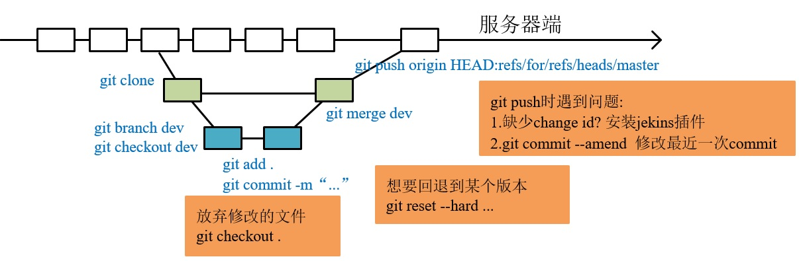

Git快速入门手册
本文作为版本控制软件git的入门指导和常用命令整理。
首先用一张图来总结基本的使用的流程，后文中都有详细的解释。

1.git的安装
自诞生于 2005 年以来，Git 日臻成熟完善，在高度易用的同时，仍然保留着初期设定的目标。它的速度飞快，极其适合管理大项目 。Git可以在windows、Mac、Linux全平台系统使用。登录 https://git-scm.com/downloads 下载你系统的Git软件并进行安装。windows 用户建议安装 git for windows ，下载地址： https://gitforwindows.org/，包含 Git Base、Git Gui安装后通过以下命令查看，如果显示版本号那就是安装成功了
git --version
Gui指Git的图形界面管理软件，https://git-scm.com/downloads/guis 这个网址列出了多个可供基本上所有平台使用的Gui软件。如果要使用Gui而非命令行操作，推荐 sourcetree，功能强大、跨平台、免费。
2.初始配置
配置文件为 ~/.gitconfig ，执行任何Git配置命令后文件将自动创建。
第一个要配置的是你个人的用户名称和电子邮件地址。这两条配置很重要，每次 Git 提交时都会引用这两条信息，说明是谁提交了更新，所以会随更新内容一起被永久纳入历史记录：
git config --global user.email "abcd@qq.com"
git config --global user.name "abcd@qq.com"
3.常用命令
初始化新仓库 git init
克隆旧仓库 git clone https://github.com/opencv/opecv.git
查看状态 git status
提交单个文件 git add main.cpp
提交所有文件 git add -A
使用通配符提交 git add *.cpp
提交到仓库中 git commit -m '提示信息'
提交已经跟踪过的文件，不需要执行add git commit -a -m '提交信息'
删除版本库与项目目录中的文件 git rm utils.cpp
只删除版本库中文件但保存项目目录中文件 git rm --cached main.cpp
修改最后一次提交 git commit --amend
4.清理
放弃没有提交的修改 git checkout .
删除没有add 的文件和目录 git clean -fd
显示将要删除的文件或目录 git clean -n
5.日志查看
查看日志 git log
查看最近2次提交日志并显示文件差异 git log -p -2
显示已修改的文件清单 git log --name-only
显示新增、修改、删除的文件清单 git log --name-status
一行显示并只显示SHA-1的前几个字符 git log --oneline
6.定义别名
通过创建命令别名可以减少命令输入量。
git config --global alias.c commit
可以在配置文件 ~/.gitconfig 中查看或直接编辑
下面是一个Git命令Alias配置
[alias]
a = add .
c = commit
s = status
l = log
b = branch
现在可以使用 git a 实现 git add . 一样的效果了。
常用别名
在 ~/.bash_profile 文件中定义常用的别名指令
alias gs="git status"
alias gc="git commit -m "
alias gl="git log --graph --pretty=format:'%Cred%h%Creset -%C(yellow)%d%Creset %s %Cgreen(%cr) %C(bold blue)<%an>%Creset' --abbrev-commit "
alias gb="git branch"
alias ga="git add ."
alias go="git checkout"
命令行直接使用 gs 即可以实现 git status 一样的效果了。
window 系统需要使用 git for window 中的 Git Base 软件
7. .gitignore
.gitignore用于定义忽略提交的文件
所有空行或者以注释符号 ＃ 开头的行都会被 Git 忽略。
匹配模式最后跟反斜杠（/）说明要忽略的是目录。
可以使用标准的 glob 模式匹配。
.idea
/vendor
.env
/node_modules
/public/storage
*.txt
8.Branch
分支用于为项目增加新功能或修复Bug时使用。
- 创建分支
git branch dev - 查看分支
git branch - 切换分支
git checkout dev - 创建并切换分支
git checkout -b feature/bbs - 合并
dev分支到master
git checkout master
git merge dev
- 删除分支
git branch -d dev - 删除没有合并的分支
git branch -D dev - 删除远程分支
git push origin :dev - 查看未合并的分支(切换到
master)git branch --no-merged - 查看已经合并的分支(切换到
master)git branch --merged
9.冲突解决
不同分修改同一个文件或不同开发者修改同一个分支文件都可能造成冲突，造成无法提交代码。
使用编辑器修改冲突的文件
添加暂存 git add . 表示已经解决冲突
然后使用git commit 提交完成
10. Stashing
当你正在进行项目中某一部分的工作，里面的东西处于一个比较杂乱的状态，而你想转到其他分支上进行一些工作。问题是，你不想提交进行了一半的工作，否则以后你无法回到这个工作点。
“暂存” 可以获取你工作目录的中间状态——也就是你修改过的被追踪的文件和暂存的变更——并将它保存到一个未完结变更的堆栈中，随时可以重新应用。
储藏工作 git stash
查看储藏列表 git stash list
应用最近的储藏 git stash apply
应用更早的储藏 git stash apply stash@{2}
删除储藏 git stash drop stash@{0}
应用并删除储藏 git stash pop
11.Tag
Git 也可以对某一时间点上的版本打上标签 ，用于发布软件版本如 v1.0
添加标签 git tag v1.0
列出标签 git tag
推送标签 git push --tags
删除标签 git tag -d v1.0.1
删除远程标签 git push origin :v1.0.1
12.打包发布
对master分支代码生成压缩包供使用者下载使用，--prefix 指定目录名
git archive master --prefix='opencv/' --format=zip > opencv.zip
- 原文作者：Binean
- 原文链接：https://bzhou830.github.io/post/20190620Git%E4%BD%BF%E7%94%A8%E6%80%BB%E7%BB%93/
- 版权声明：本作品采用知识共享署名-非商业性使用-禁止演绎 4.0 国际许可协议进行许可，非商业转载请注明出处（作者，原文链接），商业转载请联系作者获得授权。